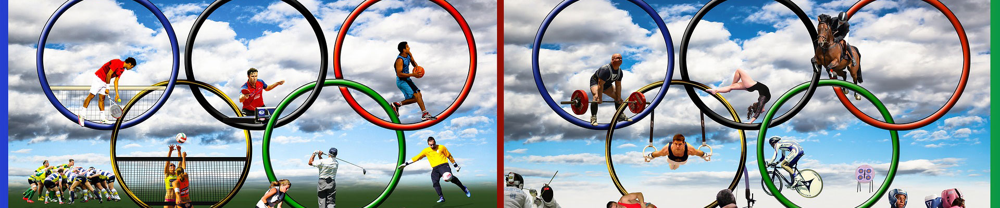
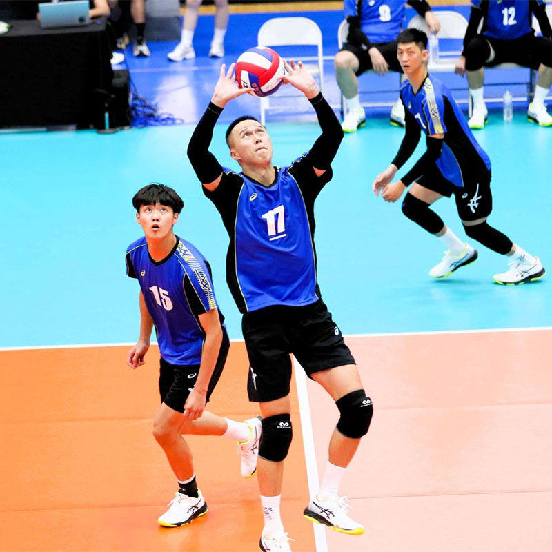

十大運動防護注意事項
1.事前熱身
熱身活動應該包括輕微的有氧運動，如慢跑或騎自行車，以增加心率和提高體溫。此外，進行關節活動和肌肉伸展可以增加關節靈活性和肌肉彈性，減少受傷風險。
2.穿戴適當的裝備
運動裝備應符合相關的安全標準，並且合身舒適。例如，運動鞋應提供足夠的支撐和減震，護具應該能有效保護特定部位免受撞擊或扭傷。
3.適當的技術和姿勢
運動員應該接受正確的技術指導和訓練，以確保他們執行運動動作時使用正確的姿勢和技巧。這有助於減少過度使用某些肌肉或關節的風險，並減少不正確負載所引起的損傷。
4.適當的休息和恢復
運動後，運動員應給予身體足夠的時間來休息和恢復。這包括休息時間和睡眠時間的充足，以及針對性的康復訓練，如按摩或伸展。
5.保持良好的身體狀態
運動員應該注重均衡的飲食，保持足夠的水分攝入，並注意心理健康。這有助於提高身體的抵抗力，減少受傷的風險。
6.定期檢查身體狀況
運動員應該定期接受體檢，以確保沒有潛在的健康問題。此外，運動員應該密切關注身體的變化，如疼痛或不適，及時尋求醫療幫助。
7.防止過度訓練
運動員和教練應該密切關注訓練量和強度，避免過度訓練導致肌肉疲勞和損傷。適當的休息和循序漸進的訓練計劃可以幫助預防過度訓練。
8.適當的治療和康復
如果運動員受傷，他們應該立即停止運動並尋求適當的治療。治療應該包括止痛、冰敷、壓迫和抬高等基本急救方法，以及專業的醫療治療和康復計劃。
9.準備應急計劃
運動場地應該配備完善的急救設備，如急救箱和AED，並有經過培訓的急救人員。此外，運動員和教練應該知曉應對突發狀況的應急計劃，包括撤離和呼救程序。
10.教育和培訓
運動員、教練和其他相關人員應該定期接受教育和培訓，了解受傷的預防和處理方法，並掌握急救技能。這可以提高對潛在風險的認識，並加強應對緊急情況的能力。
傳奇名人堂
陳建禎
- 中華台北男子排球代表隊代表-大砲手
- 台灣🇹🇼排球選手🏐️#19
- 2017-日本V-League🇯🇵
- 2023-北海道YELLOW STARS
- 2022-23北海道Safilva
- 2019-22JTサンダーズ広島
- 2018-19Panasonic Panthers
- 2017-18北海道VOREAS
- 2015-17中國聯賽🇨🇳福建師大俱樂部
- 台灣亞瑟士贊助選手
張育陞
- 中華台北男子排球代表隊代表-副攻手
- 2018年：高中排球聯賽 - 最有價值球員、最佳副攻手
- 2019年：亞洲U23男子排球錦標賽 - 最佳副攻手
- 2021年：日本排球聯賽二級聯賽 - 敢鬥獎、最佳發球獎
- 2022年：日本排球聯賽二級聯賽 - 最高榮譽選手獎、得分王、最佳發球獎
- 2023年：日本排球聯賽二級聯賽 - 最高榮譽選手獎、得分王、最佳扣球獎、最佳發球獎
- 2019/2022-日本排球聯賽二級聯賽 – VOREAS北海道
- 2022/2023-日本排球聯賽一級聯賽 – VOREAS北海道
- 112學年度大專排球聯賽–冠軍

黃培閎
- 中華台北男子排球代表隊代表-舉球員
- 苗栗縣苑裡國小排球隊
- 苗栗縣苑裡國中排球隊
- 苗栗縣苑裡高中排球隊
- 台北市台灣師大排球隊
- 企業排球聯賽MIZUNO男子排球隊
- 企業排球聯賽國訓男子排球隊
- 西班牙排球超級聯賽Electrocash CCPH排球隊
- 義大利排球聯賽超級聯賽拉蒂納頂級排球
戴儒謙
- 中華台北男子排球代表隊代表-舉球員
- 新北市華僑高中排球隊
- 新北市華僑高中排球隊
- 台北市台灣師大排球隊
- 屏東縣大仁科技大學排球隊
- 企業排球聯賽國訓中心男子排球隊
- 企業排球聯賽屏東台電男子排球隊